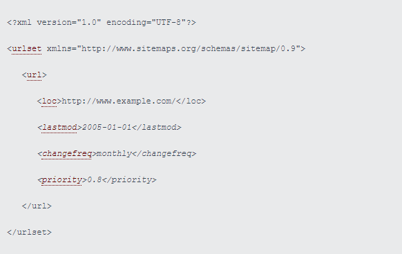

Um bom Sitemap XML age como um roteiro para a página criada, e leva o Google ou outro motores de busca a encontrar as páginas mais importantes do site (Hendriks, 2018).
Um ficheiro sitemap.xml, em que XML significa "Extensible Markup Language", é um tipo de ficheiro cujo propósito é especificar as ligações de uma página web, vide Figura 1.

Figura 1: Exemplo de um ficheiro sitemap.xml. Fonte: Sitemaps (2018).
A Figura 1 é constituido por:
A Figura 1 apenas contém apenas uma ligação, contudo, este ficheiro poderia conter mais que uma ligação desde que, cada uma destas, estivessem, tal como foi dito anteriormente, entre as tags "<url>" e "</url>".
Esta ferramenta não é cem por cento fiável e, por isso, pode haver páginas que não sejam encontradas. Mas, mesmo assim, existe a possibilidade de pelo menos uma página ser descoberta e, a partir desta, haver ligações para outras páginas. Este tipo de ficheiro também é muito útil para informar aos motores de busca se uma página foi adicionada ou removida.